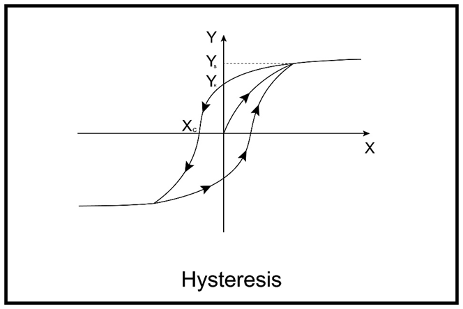

Answer:
A transformer works on the principle of electromagnetic induction. It transfers electrical energy between circuits through a changing magnetic field.
Main function: To step up or step down AC voltages using different numbers of turns on primary and secondary windings.
Answer:
Magnetic flux (Φ) is the total magnetic field passing through a surface.
Formula: Φ = B · A · cosθ
Unit: Weber (Wb) → 1 Wb = 1 Tesla·m²
Answer:
Both act as "traffic cops" but for different flows (flux vs current).
Answer:
Permeability (μ) measures how easily a material allows magnetic flux.
Answer:
The B–H curve shows how flux density (B) changes with magnetizing force (H).
It reveals the material’s saturation point, hysteresis loss, and suitability for cores.
Answer:
Induced EMF is proportional to the rate of change of magnetic flux:
e = -N (dΦ/dt)
Minus sign represents Lenz’s law (induced EMF opposes the cause).
Answer:
Analogous to series/parallel resistors, but with magnetic terms.
Answer:
Answer:
Permeance is the reciprocal of reluctance, indicating how easily magnetic flux can be established.
High permeance improves flux conduction and efficiency.
Answer:
The line integral of magnetic field (H) around a closed path equals the net current enclosed:
∮ H · dl = NI
Used to determine magnetic field strength in symmetrical paths.
Answer:
Skin effect: AC current concentrates near the conductor surface at higher frequencies.
Effect: Reduces effective cross-section → increases resistance.
Mitigation: Use stranded conductors or Litz wire.
Answer:
The property of a coil due to which it opposes any increase or decrease of current or flux through it is called self-inductance.
Answer:
Mutual inductance (M) is a property where a changing current in one coil induces an EMF in a neighboring coil. The induced EMF is proportional to the rate of change of current.
Unit: Henry (H)
Answer:
